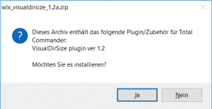
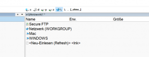
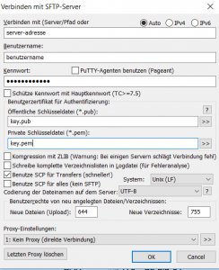
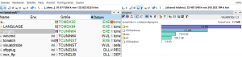
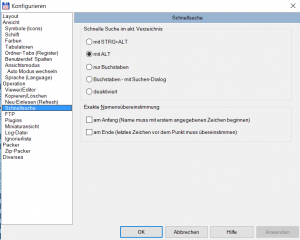
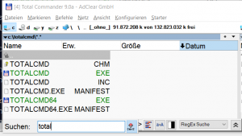

Total Commander als SFTP-Client einrichten
Der Total Commander ist der bessere Explorer für Windows und auch wenn das Programm schon etwas in die Jahre gekommen ist: Vor allem im professionellen Bereich gibt es aus meiner Sicht keine Alternative. Einige praktische Funktionalitäten fehlen dem Total Commander allerdings, wenn man ihn frisch installiert. So lässt sich der noch nicht als Total Commander als SFTP-Client verwenden. Dazu ist die Installation eines Plugins nötig. Das werde ich im folgenden erklären. Außerdem zeige ich, wie man zwei zusätzliche Plugins installiert, die die Arbeit sehr erleichtern: VisualDirSize und QuickSearch eXtended.
(Manche Plugins kannst du relativ einfach installieren, indem du deren Archiv mit dem Total Commander selber öffnest.)
[caption id=“attachment_1539” align=“aligncenter” width=“300”] 
{kind=link}
Das SFTP-Plugin installieren
Das SFTP-Plugin stammt ebenfalls vom Total Commander Entwickler, muss aber manuell von dessen Seite heruntergeladen werden. Nachdem du die Datei heruntergeladen, entpackt und in einen Ordner* nach c:/totalcmd/plugins/wfx/ kopiert hast, musst das du das gleiche für die SSL-Bibliotheken machen. Auch diese sind auf der Plugin-Seite verlinkt. Danach kannst du den Total Commander wieder starten
*ich setze mal voraus, dass das dein aktueller Programm Ordner für den TC ist, andernfalls gehört es natürlich in den bei dir genutzten Programm-Ordner
[caption id=“attachment_1541” align=“aligncenter” width=“300”] 
{kind=link}
Über das Menü (Konfigurieren - Einstellungen) gelangst du zum Plugin-Manager und dem Dialog für die Dateisystem-Plugins. Mit “Hinzufügen” suchst du nun nach dem Ordner, in den du eben die Plugin-Dateien kopiert hast. Fertig. Wenn du nun in die Netzwerkumgebung wechselst, findest du dort den Eintrag “SecureFTP”. Darin lassen sich mit F7 neue Zugänge anlegen. Mit ALT+Enter kannst du diese bearbeiten und mit SHIFT-F6 umbenennen. Wenn du die Datei sftpplug.ini im Total-Commander-Verzeichnis bearbeitest, kannst du die SFTP-Zugängen auch bequem mit einem Text-Editor verwalten.
[caption id=“attachment_1542” align=“aligncenter” width=“244”] 
{kind=link}
Das war es. Nun kannst du den Total Commander als SFTP-Client verwenden.
Das VisualDirSize-Plugin installieren
Als nächstes installierst du dir das Plugin, um dir die Größe von Verzeichnissen und Dateien grafisch darstellen zu lassen. Das Plugin ist zwar auch schon über 10 Jahre alt, aber dennoch äußerst praktisch. Du kannst es dir auf einer der bekanntesten aber inoffiziellen Plugin-Seite für den Total Commander herunterladen: totalcmd.net
[caption id=“attachment_1543” align=“aligncenter” width=“300”] 
{kind=link}
Auch diese Datei muss entpackt und in einen Unterordner des Plugin-Ordners kopiert werden. Nach einem Neustart kannst du das Plugin mit STR+Q bzw. CTRL+Q aktivieren. Die Einstellungen verstecken sich hinter dem kleinen Hammer-Symbol, rechts oben in der Menüleiste des Plugins.
Das QuickSearch eXtended-Plugin installieren
Dieses Plugin rundet deinen Total Commander schließlich perfekt ab. Es ermöglicht dir, die Verzeichnis- bzw. Datei-Listen zu filtern. Du drückst also eine beliebige Steuer-Taste (ALT, CTRL, …) und gibst danach die Zeichenfolge ein, nach der du suchen möchtest. Die Ansicht wird daraufhin für diese Zeichenfolge gefiltert. Das Plugin kann sehr stark angepasst werden und unterstützt z.B. die Suche mit regulären Ausdrücken oder nach ähnlichen Begriffen.
Auch das Plugin muss auf totalcmd.net heruntergeladen und entpackt werden. Auch hier wird der automatische Plugin-Installer unterstützt. Nach einem Neustart steht es dann zur Verfügung. Die Einstellungen befinden sich entweder rechts neben dem Suchfeld (der Doppel-Pfeil nach oben) oder können über tcmatch.exe aufgerufen werden. Die Funktionstaste, mit der das Suchfeld aktiviert wird, muss übrigens im Total Commander eingestellt werden. Zu finden ist diese Einstellungen über die Konfiguration im Bereich “Schnellsuche”.
[caption id=“attachment_1544” align=“aligncenter” width=“300”] 
{kind=link}
Willst du den Filter aktivieren, also die Dateiliste für den Suchbegriff filtern, drückst du entweder CTRL+S bzw. STRG+S oder den kleine Button rechts neben der Suchleiste.
[caption id=“attachment_1540” align=“aligncenter” width=“300”] 
{kind=link}